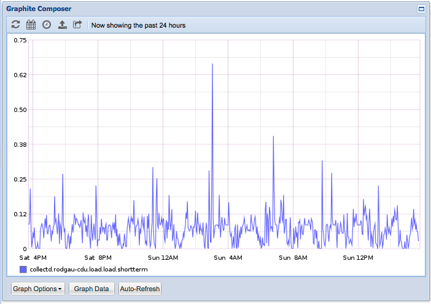

<!doctype html>
<html>
	<head>
		<meta charset="utf-8">
		<meta name="viewport" content="width=device-width, initial-scale=1.0, maximum-scale=1.0, user-scalable=no">

		<title>CI/CD and related Technologies</title>

		<link rel="stylesheet" href="css/reveal.css">
		<link rel="stylesheet" href="css/theme/solarized.css">

		<!-- Theme used for syntax highlighting of code -->
		<link rel="stylesheet" href="lib/css/zenburn.css">

		<!-- Printing and PDF exports -->
		<script>
			var link = document.createElement( 'link' );
			link.rel = 'stylesheet';
			link.type = 'text/css';
			link.href = window.location.search.match( /print-pdf/gi ) ? 'css/print/pdf.css' : 'css/print/paper.css';
			document.getElementsByTagName( 'head' )[0].appendChild( link );
		</script>
	</head>
	<body>
		<div class="reveal">
			<div class="slides">

				<section data-markdown>
          <script type="text/template">
            ## CI/CD and related Technologies
          
            By Oli Z.
          </script>
        </section>

        <section data-markdown>
          <script type="text/template">
            ## Vagrant
          
            * Unified CLI for virtualbox / parallels\* / vmware\*
            * Essential to automate VM operations

            (\*) commercial
          </script>
        </section>

        <section data-markdown>
          <script type="text/template">
            ## Vagrant - workshop
          
            * HP: https://www.vagrantup.com
            * Image catalog: https://atlas.hashicorp.com/

            ```
            $ brew cask install vagrant (virtualbox) 
            $ brew install
                    homebrew/completions/vagrant-completion
            $ vagrant init ubuntu/xenial64
            $ vi Vagrantfile (enable IP, python)
            $ vagrant up | ssh | destroy 
                    (see VirtualBox UI, authorized_keys)
            ```

          </script>
        </section>

        <section data-markdown>
          <script type="text/template">
            ## Ansible

            * Bash automation with super powers based on Python, but extendable in any language
            * Adds structure to automation and is inherently self-documenting
            * Moves code to config and has templating engine

          </script>
        </section>

        <section data-markdown>
          <script type="text/template">
            ## Ansible - workshop

            * HP: https://www.ansible.com
            * Doc: [list_of_all_modules](http://docs.ansible.com/ansible/list_of_all_modules.html)
            * Needs only Python on remote server and works via SSH
            * inventory.ini: [host] 192.168.33.10

            ```
            $ brew install ansible
            $ ansible all -i inventory.ini -u ubuntu -m ping (-vvv)
            ```

          </script>
        </section>

        <section data-markdown>
          <script type="text/template">
            ## Docker 

            * Lightweight VM technology, super fast
            * Supports only Linux as a guest
            * Principle: 1 process running in foreground per container
          </script>
        </section>

        <section data-markdown>
          <script type="text/template">
            ## Docker - workshop 

            * HP: https://www.docker.com
            * Dockerfile

            ```
            $ brew cask install docker
            $ docker run -it ubuntu bash (ps aux, ll)
            $ docker run -e MYSQL_ALLOW_EMPTY_PASSWORD=true 
                -p 3306:3306 mysql
            $ mysql -h 127.0.0.1 -uroot
            ```
          </script>
        </section>

        <section data-markdown>
          <script type="text/template">
            ## Graphite

            * Time centric, simple numeric value database (like RRD)
            * TCP based data collection
            * Web UI graph drawing
            * It’s very simple to use (not to install)
            * HP: http://graphiteapp.org/
            * Alerting: [cabotapp](http://cabotapp.com/), [cabot-alert-slack](https://github.com/lblasc/cabot-alert-slack)
            * More: https://github.com/etsy/statsd/wiki 

          </script>
        </section>

        <section data-markdown>
          <script type="text/template">
            ## collectd

            * Gathers metrics and sends them away
            * Easy to set up to collect data from CPU, memory, network interfaces, disks and applications
            * Easy to integrate with graphite
            * HP: http://collectd.org/
          </script>
        </section>

        <section data-markdown>
          <script type="text/template">
            ## jmxtrans

            * Gathers metrics from Java process via JMX and sends them away
            * Easy to integrate with graphite and every application which exposes metrics via JMX
            * HP: http://www.jmxtrans.org/
          </script>
        </section>

        <section data-markdown>
          <script type="text/template">
            ## Graphite/collectd/jmxtrans - workshop

            Example: http://graphite.oglimmer.de

            
          </script>
        </section>


        <section data-markdown>
          <script type="text/template">
            ## Demo - Ansible, vagrant, docker 

            ```
            $ git clone https://github.com/oglimmer/cyc
            See files in /ansible/oglimmer.de and /ansible/multi-vm
            See roles/tomcat7
            $ export VAGRANT=UP
            $ ./install.h -r multi-vm site
            $ git clone https://github.com/oglimmer/lunchy
            $ cd docker-e2e-tests
            $ ./run.sh
            ```

          </script>
        </section>

        <section data-markdown>
          <script type="text/template">
            ## Demo - liquibase - prepare

            ```
            $ docker run -d -e MYSQL_ALLOW_EMPTY_PASSWORD=true 
              -p 3306:3306 mysql
            
            ~/.my.cnf: [mysql] host=127.0.0.1 user=root
            $ git clone https://github.com/oglimmer/lunchy
            $ ./db-manage.sh -h
            $ mysql -e 'create database oli_lunchy'
            $ mysql -e 'create database oli_lunchy_staging'
            $ mysql -e 
              "set global sql_mode = 'ONLY_FULL_GROUP_BY,
              STRICT_TRANS_TABLES,ERROR_FOR_DIVISION_BY_ZERO,
              NO_AUTO_CREATE_USER,NO_ENGINE_SUBSTITUTION'"
            ```
          </script>
        </section>

        <section data-markdown>
          <script type="text/template">
            ## Demo - liquibase

            ```
            $ ./db-manage.sh -a
            $ ./db-manage.sh -d
            $ ./db-manage.sh -u
            $ ./db-manage.sh -d

            $ mysql -e 
              'alter table oli_lunchy.users add telefon varchar(255)'
            $ ./db-manage.sh -d
            
            copy new changeSet to all_tables.xml 
            $ ./db-manage.sh -u and use output to run in prod
            $ ./db-manage.sh -i
            ```
          </script>
        </section>

        <section data-markdown>
          <script type="text/template">
            ## Oli’s best practices

            * See http://oglimmer.de/de.oglimmer.utils
            * Log files under /etc

            * [Example ](https://github.com/oglimmer/ggo/blob/master/core/src/main/java/de/oglimmer/ggo/util/GridGameOneProperties.java)

          </script>
        </section>

			</div>
		</div>

		<script src="lib/js/head.min.js"></script>
		<script src="js/reveal.js"></script>

		<script>
			// More info https://github.com/hakimel/reveal.js#configuration
			Reveal.initialize({
				history: true,

				// More info https://github.com/hakimel/reveal.js#dependencies
				dependencies: [
					{ src: 'plugin/markdown/marked.js' },
					{ src: 'plugin/markdown/markdown.js' },
					{ src: 'plugin/notes/notes.js', async: true },
					{ src: 'plugin/highlight/highlight.js', async: true, callback: function() { hljs.initHighlightingOnLoad(); } }
				]
			});
		</script>
	</body>
</html>
